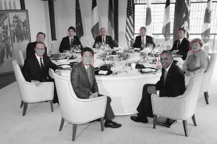

Problem
前回はdlibをCUDAを有効にしたバイナリ、無効にしたバイナリを生成しました。
具体的に、CUDAを有効にしている状態で、どれだけ性能差が出るのかを比較したいと思います。
Preparation
まずは、実験に使う画像を用意します。 今回は下記を用意しました。
元画像: https://upload.wikimedia.org/wikipedia/commons/b/b7/G7\_summit\_at\_Shimakan.jpg 4368x2912の大きなサイズです。 次に計測を行うソースです。 examples\face_detection_ex.cppという顔検出のサンプルがあります。 [code lang=”cpp”] #include <dlib/image_processing/frontal_face_detector.h> #include <dlib/gui_widgets.h> #include <dlib/image_io.h> #include
using namespace dlib; using namespace std;
// —————————————————————————————-
int main(int argc, char** argv) { try { if (argc == 1) { cout << “Give some image files as arguments to this program.” << endl; return 0; }
frontal_face_detector detector = get_frontal_face_detector(); image_window win;
// Loop over all the images provided on the command line. for (int i = 1; i < argc; ++i) { cout << “processing image “ << argv[i] << endl; array2d
// Now tell the face detector to give us a list of bounding boxes // around all the faces it can find in the image. std::vector
cout << “Number of faces detected: “ << dets.size() << endl; // Now we show the image on the screen and the face detections as // red overlay boxes. win.clear_overlay(); win.set_image(img); win.add_overlay(dets, rgb_pixel(255,0,0));
cout << “Hit enter to process the next image…” << endl; cin.get(); } } catch (exception& e) { cout << “\nexception thrown!” << endl; cout << e.what() << endl; } } [/code] これに対して、上述の画像を認識させると

こうなります。
{kind=link}
{kind=link}
Try
このソースを下記のように改造します。 [code lang=”cpp”] #include <dlib/image_processing/frontal_face_detector.h> #include <dlib/gui_widgets.h> #include <dlib/image_io.h> #include
using namespace dlib; using namespace std;
// —————————————————————————————-
int main(int argc, char** argv) { try { if (argc == 1) { cout << “Give some image files as arguments to this program.” << endl; return 0; }
frontal_face_detector detector = get_frontal_face_detector(); image_window win;
std::chrono::system_clock::time_point start, end; start = std::chrono::system_clock::now();
// Loop over all the images provided on the command line. for (int c = 0; c < 100; c++) for (int i = 1; i < argc; ++i) { cout << “processing image “ << argv[i] << endl; array2d
// Now tell the face detector to give us a list of bounding boxes // around all the faces it can find in the image. std::vector
//cout << “Number of faces detected: “ << dets.size() << endl; // Now we show the image on the screen and the face detections as // red overlay boxes. //win.clear_overlay(); //win.set_image(img); //win.add_overlay(dets, rgb_pixel(255,0,0));
//cout << “Hit enter to process the next image…” << endl; //cin.get(); }
end = std::chrono::system_clock::now(); double elapsed = std::chrono::duration_caststd::chrono::milliseconds(end-start).count(); //ミリ秒に変換
std::cout << std::fixed; cout << “Total: “ << std::setprecision(4) << elapsed << endl; cout << “Average: “ << std::setprecision(4) << elapsed / 100 << endl; } catch (exception& e) { cout << “\nexception thrown!” << endl; cout << e.what() << endl; } } [/code] 要するに、入力した画像ファイルを100回認識させ、その処理に要した合計時間と平均時間を算出するようにしただけです。 下記がその結果です。
Left align
Total(ms)
Average(ms)
w/o CUDA
1007778.0000
10077.7800
w/ CUDA
997522.0000
9975.2200
正直微妙です。約10%しか差がありません。